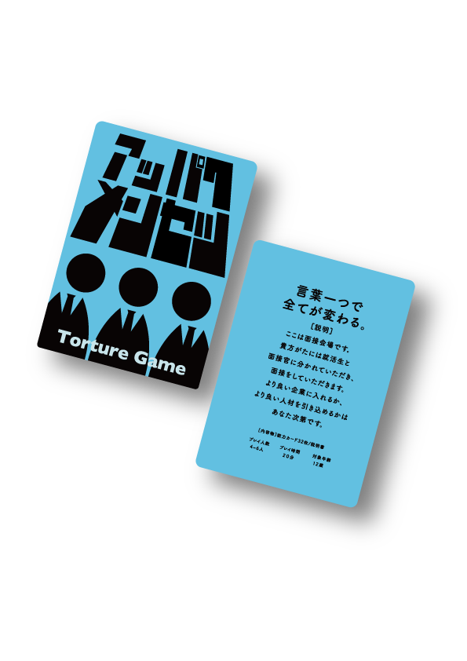
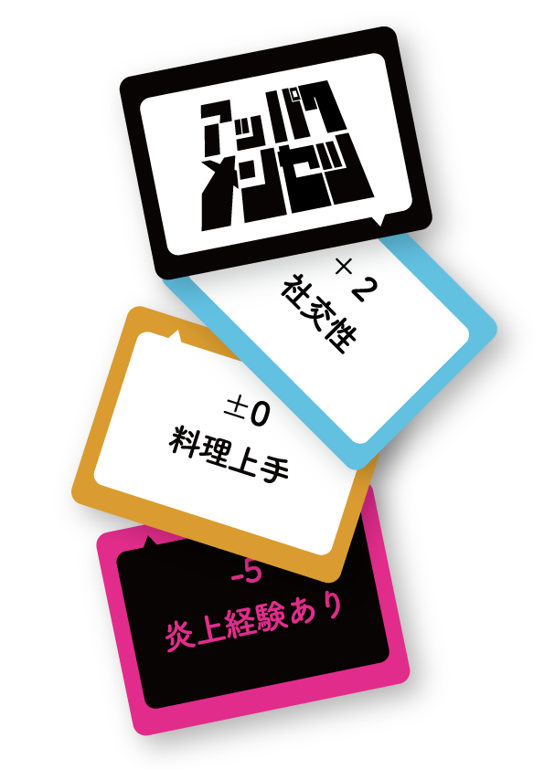
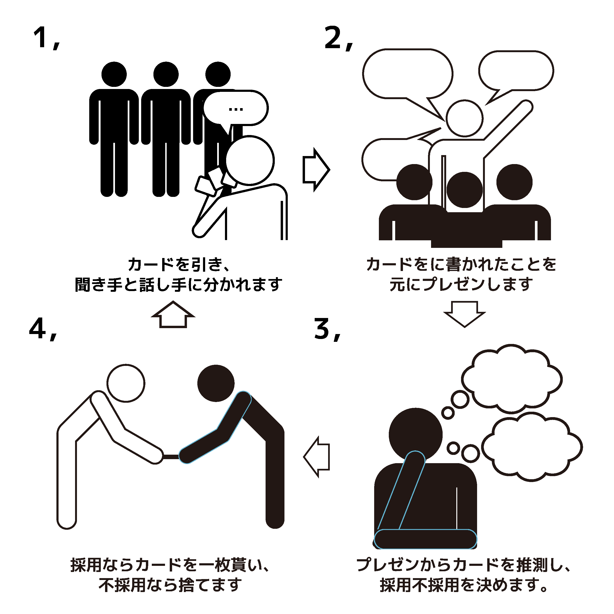

非対称プレゼン型ボードゲーム
言葉の持つ面白さを
堪能するゲーム
長所短所、得意不得意、それらを人に説明する時どう伝えるか言葉や話し方で短所が長所に、得意なものが不得意なものに変化します。
そんな言葉の持つ面白さを面接という自分を端的に伝えなければいけない空間を用いてゲームにしました。


面白さと真面目さの共存
面接をモチーフにしているため、真面目さはデザインの中に必要ですがゲームとしての面白さ、楽しさもなくてはなりません。
その二つを共存させるために様々なデザイン案を制作し、印刷まで行い、実際に遊べるようにしました。
弱みも強みに言い換える
各プレイヤーは三枚カードをひき、カードに書かれた能力を元にプレゼンをします。プラス、マイナス、ゼロポイント、どのカードが出ても上手く言い換えてプレゼンしてください。
プレゼンを元にプレイヤーの手札を予測し、カードを貰うか捨てるか判断します。プレゼンに惑わされてマイナスカードを貰わないように注意しましょう。
遊び方
